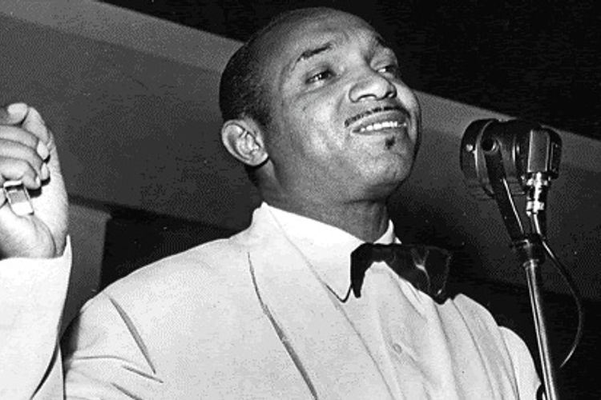
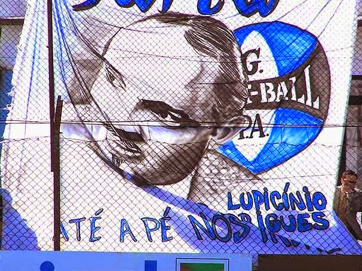
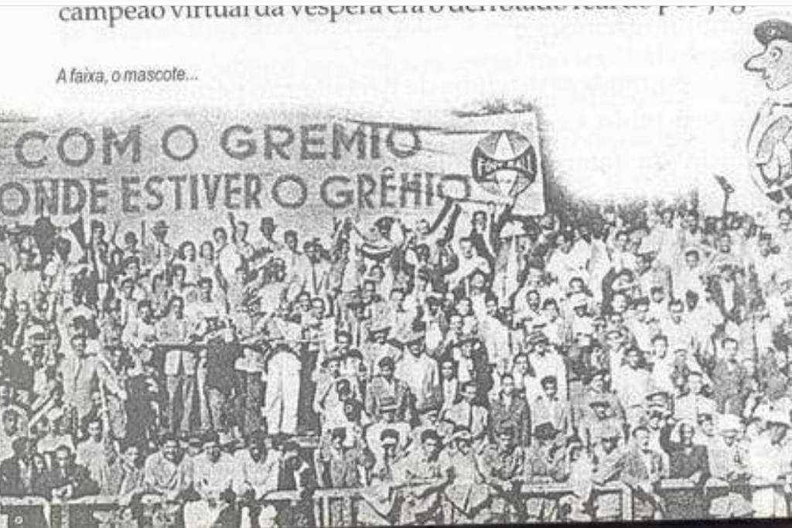

Como surgiu o hino do Grêmio?
Lupicínio Rodrigues
Nascido em Porto Alegre, Lupicínio Rodrigues (compositor e sambista) tentou se arriscar no esporte mais popular do país. Segundo o livro “Almanaque do Lupi”, lançado pelo jornalista e pesquisador Marcello Campos no ano passado, Lupi era um meia sem grande talento, mas que adorava participar das pedalas no bairro Ilhota, em Porto Alegre, onde nasceu e cresceu.
Lupicínio Rodrigues deixou sua marca na história do Grêmio em 1963, quando compôs o hino do clube, que é considerado um dos mais bonitos do Brasil:
Até a pé nós iremos
Para o que der e vier
Mas o certo é que nós estaremos
Com o Grêmio onde o Grêmio estiver
(...)
Contexto histórico
O verso "Até a pé nós iremos", na sua história de origem mais popular e mais difundida dá conta que em razão da greve de bondes em Porto Alegre, Lupicínio e os demais torcedores tiveram que ir a pé até o Estádio dos Eucaliptos para assistir um Gre-Nal e que deste fato surgira a célebre frase.
A inspiração de Lupicínio veio de uma faixa que passou a acompanhar a torcida organizada cerca de uma década antes. A faixa dizia, porem "Com o Grêmio onde estiver o Grêmio", na ordem inversa. "Ele só mudou a ordem para acertar a rima", disse Salim Negri, o jovem torcedor judeu que levou a faixa para o estádio pela primeira vez.
